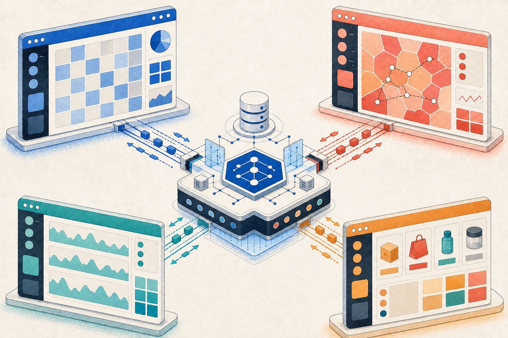
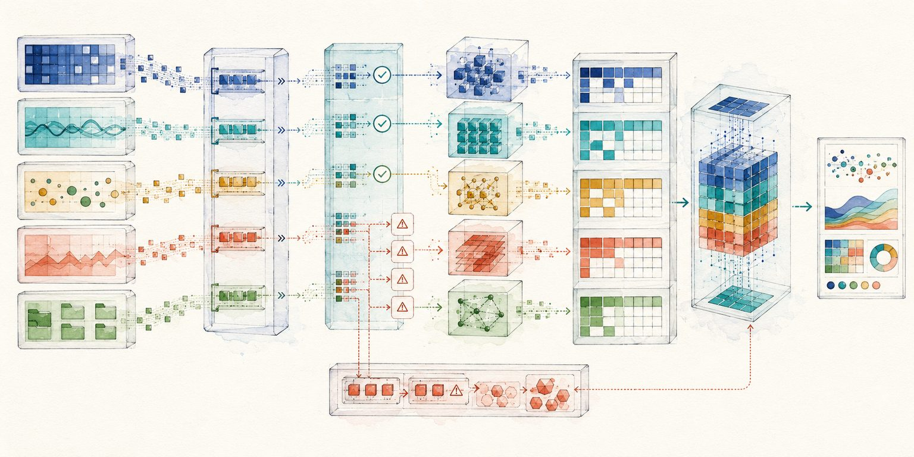
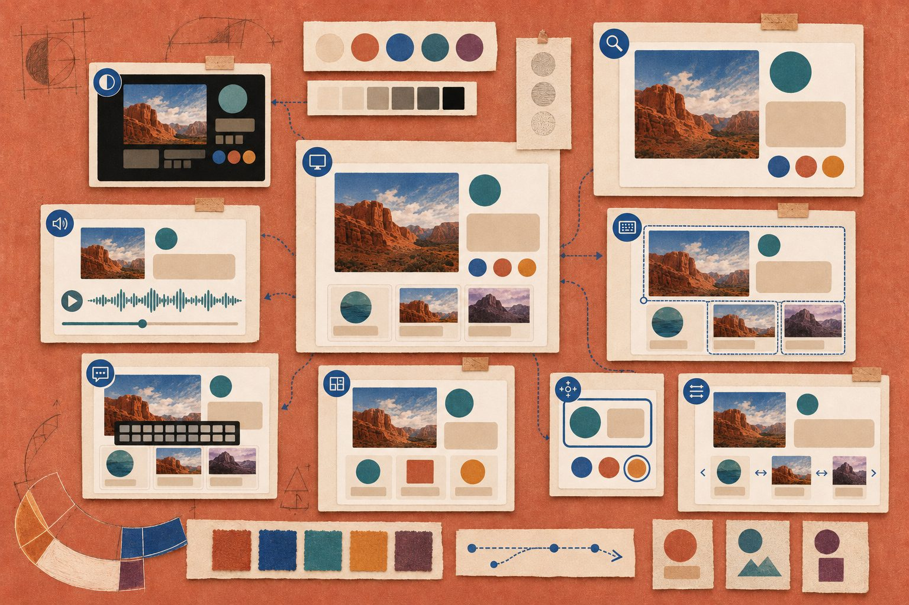
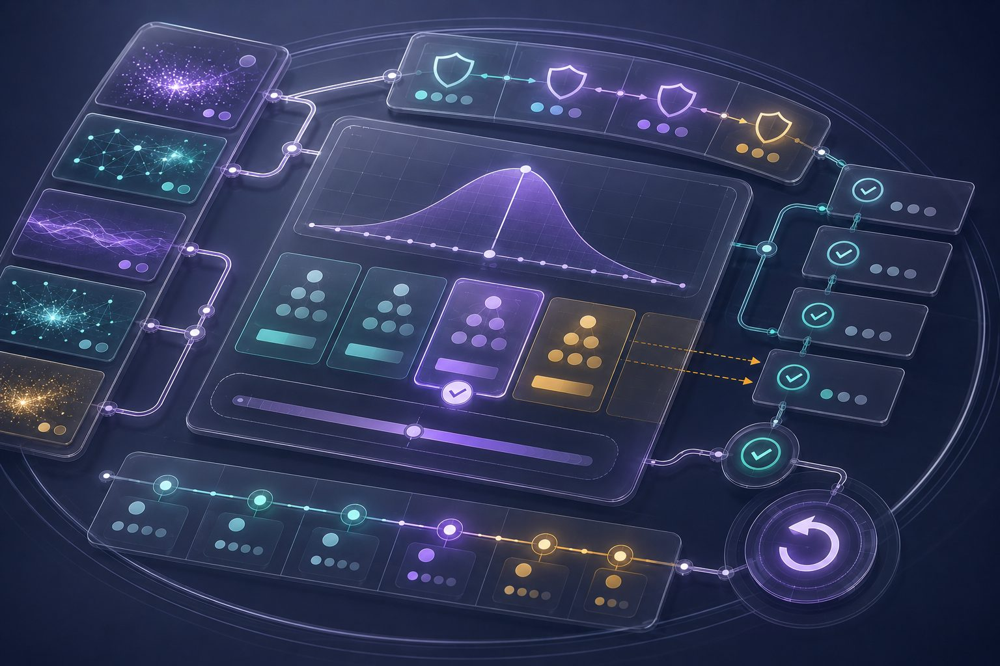
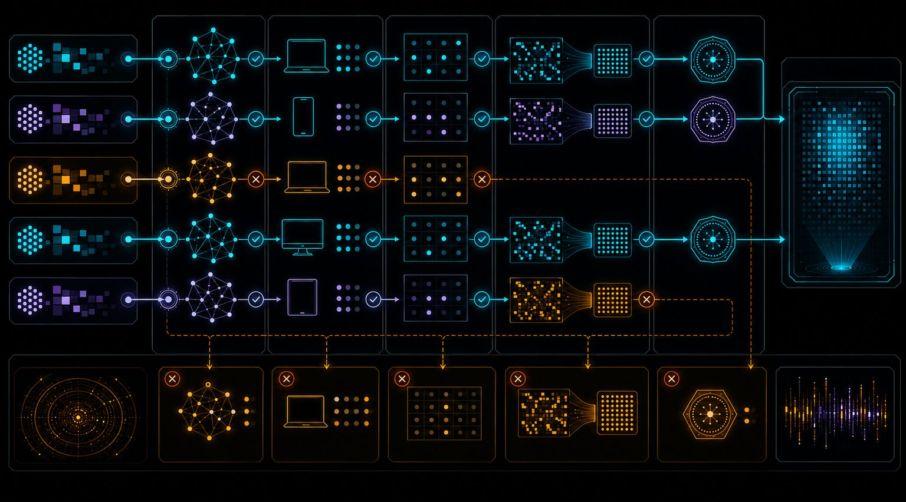
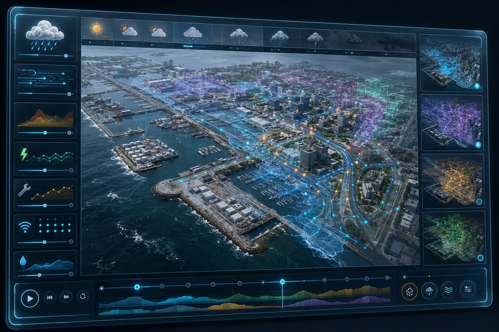
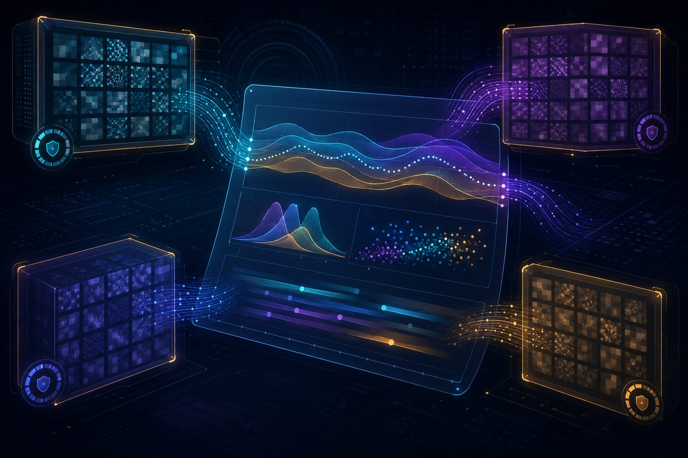
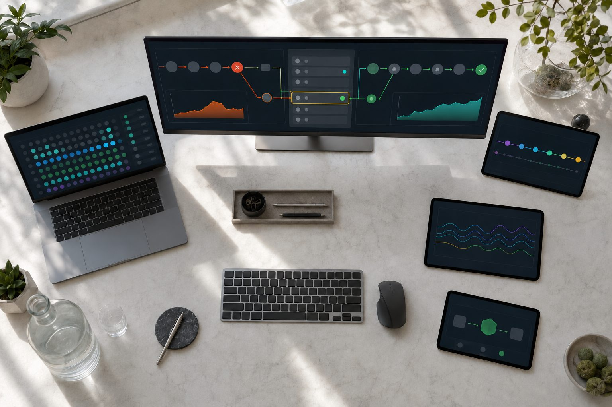

Technology
Capability, held to the same standard.
Seventeen disciplines we build and maintain in-house. None of them is a product pitch — each exists because a client operation needed it to work properly.









